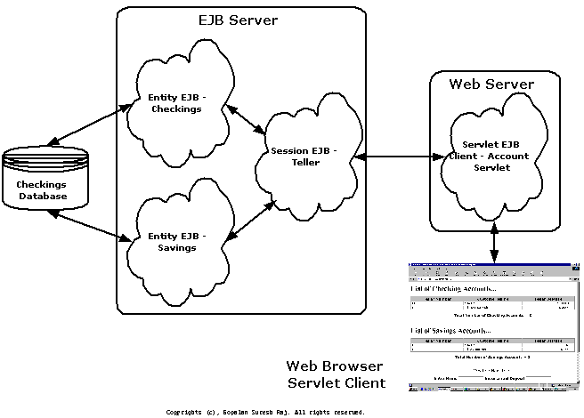

Developing
Session Beans
Gopalan Suresh Raj
| Note |
| To
work with any of these samples, you will need the
following: .........................................JDK 1.1.6 or higher (I use JDK 1.1.7B) .........................................Swing 1.1 or higher for JDK 1.1 (required if you wanna use the HomeBase GUI) .........................................The HomeBase (Scunthorpe version 0.5.1) - a free EJB Server from http://ejbhome.iona.com/ To work with the EJB Servlet client, you will need .........................................JSDK 2.0 or higher |
The Steps involved in developing and deploying a Session Bean are
1. Define your Home Interface.
2. Define your Remote Interface.
3. Develop your SessionBean
*** Note : From this point onwards, whatever we do becomes vendor (HomeBase) specific ***
4. Define your Deployment Descriptors
5. Startup your Server
A four-tier Architecture for a Typical Bank

Figure shows what we are trying to ultimately accomplish in these pages here.
1. Define your Home Interface
| Bank\TellerHome.java |
| package Bank; import
javax.ejb.*; public
interface TellerHome extends EJBHome
{ |
2. Define your Remote Interface
| Bank\Teller.java |
| package
Bank; import
javax.ejb.*; public interface Teller
extends EJBObject { |
3. Develop your SessionBean
| Bank\TellerBean.java |
| package Bank; import
javax.ejb.*; public
class TellerBean implements SessionBean
{ SessionContext ctx;
public CheckingsHome checkingsHome;
public Checkings createCheckingsAccount (String
name, double amount)
public Savings createSavingsAccount (String name,
double amount) } catch (Exception e) { break; }
}
public int getNextSavings (SavingsHome home)
throws RemoteException { } catch (Exception e) { break; }
}
public Vector getCheckingsList () throws
RemoteException {
public Vector getSavingsList () throws
RemoteException {
public Checkings getCheckings (int acc)
public Savings getSavings (int acc)
public void setSessionContext (SessionContext
ctx) |
*** Note : From this point onwards, whatever we do becomes vendor (HomeBase) specific ***
4. Write the Deployment Descriptor for your Server
Note that the deployment descriptor also specifies the properties of a certain Checkings Entity Bean and a Savings Entity Bean. Don't be surprised. The code for the Savings Entity Bean is included in the zip file and can be downloaded and is very similar to the Checkings Entity Bean. The steps to develop the Checking Entity Bean can be seen at the Developing an Entity Bean link. I am using two entity beans (Checkings and Savings) to show how workflow between two entity beans can be co-ordinated and managed by a single session bean (Teller) that creates and manages the entity beans.
| conf\Bank.ejbml |
| <ejbml> <!---------------------------------------------------------->
<entity-bean
<!---------------------------------------------------------->
<entity-bean
<!---------------------------------------------------------->
<session-bean |
5. Compile your classes and generate the Container code using the tools provided by the vendor
| MS-DOS Command Prompt |
E:\MyProjects\AccountEJB>cd Bank E:\MyProjects\AccountEJB\Bank>javac *.java E:\MyProjects\AccountEJB\Bank>cd .. E:\MyProjects\AccountEJB>java com.ejbhome.Deployer .\conf\Bank.ejbml EJBHome EJB Deployer version 0.5.1 (Scunthorpe) (c) Copyright IONA Technologies PLC 1999. All Rights Reserved. Windows NT x86 4.0 A nonfatal internal JIT (3.00.072b(x)) error 'regvarHI' has occurred in : 'com/ejbhome/Deployer.<init> (Ljava/util/Properties;Ljava/util/Vector;)V': Please report this error in detail to http://java.sun.com/cgi-bin/bugreport Deploying: Checkings... Generating: IonaCheckingsHome...done. Generating: IonaRemoteCheckings...done. Generating: IonaCheckingsBean...done. Generating: IonaCheckingsContext...done. Implementing Communications: Home Stubs & Skels...done. Implementing Communications: Remote Stubs & Skels...done. Compiling: IonaCheckingsHome.java...done. Compiling: IonaRemoteCheckings.java...done. Compiling: IonaCheckingsBean.java...done. Compiling: IonaCheckingsContext.java...done. Compiling: IonaCheckingsHome_Stub.java...done. Compiling: IonaCheckingsHome_Skel.java...done. Compiling: IonaRemoteCheckings_Stub.java...done. Compiling: IonaRemoteCheckings_Skel.java...done. Deploying: Savings... Generating: IonaSavingsHome...done. Generating: IonaRemoteSavings...done. Generating: IonaSavingsBean...done. Generating: IonaSavingsContext...done. Implementing Communications: Home Stubs & Skels...done. Implementing Communications: Remote Stubs & Skels...done. Compiling: IonaSavingsHome.java...done. Compiling: IonaRemoteSavings.java...done. Compiling: IonaSavingsBean.java...done. Compiling: IonaSavingsContext.java...done. Compiling: IonaSavingsHome_Stub.java...done. Compiling: IonaSavingsHome_Skel.java...done. Compiling: IonaRemoteSavings_Stub.java...done. Compiling: IonaRemoteSavings_Skel.java...done. Deploying: Teller... Generating: IonaTellerHome...done. Generating: IonaRemoteTeller...done. Generating: IonaTellerBean...done. Generating: IonaTellerContext...done. Implementing Communications: Home Stubs & Skels...done. Implementing Communications: Remote Stubs & Skels...done. Compiling: IonaTellerHome.java...done. Compiling: IonaRemoteTeller.java...done. Compiling: IonaTellerBean.java...done. Compiling: IonaTellerContext.java...done. Compiling: IonaTellerHome_Stub.java...done. Compiling: IonaTellerHome_Skel.java...done. Compiling: IonaRemoteTeller_Stub.java...done. Compiling: IonaRemoteTeller_Skel.java...done. E:\MyProjects\AccountEJB> |
6. Startup your Server
| MS-DOS Command Prompt |
E:\MyProjects\AccountEJB> E:\MyProjects\AccountEJB>java com.ejbhome.Server com.ejbhome.server.EnterpriseServer, initializing. com.ejbhome.server.EnterpriseServer.fireContainerAdded() at (Compiled Code) com.ejbhome.VendorConfiguration.<init>() at (VendorConfiguration.java:57) com.ejbhome.VendorConfiguration.getSystemCodeHelper() at (VendorConfiguration.java:174) com.ejbhome.VendorConfiguration.getTransactionCodeHelper() at (VendorConfiguration.java:138) com.ejbhome.VendorConfiguration.getCommsCodeHelper() at (VendorConfiguration.java:163) com.ejbhome.VendorConfiguration.getTracingCodeHelper() at (VendorConfiguration.java:152) com.ejbhome.VendorConfiguration.getPersistenceCodeHelper() at (VendorConfiguration.java:125) com.ejbhome.VendorConfiguration.getSessionPassivationCodeHelper() at (VendorConfiguration.java:185) com.ejbhome.VendorConfiguration.getVendorPrefix() at (VendorConfiguration.java:100) starting RMI registry on port 1099... RMI registry on port 1099, has started. com.ejbhome.server.EnterpriseServer.bindDataSources() at (Compiled Code) com.ejbhome.naming.spi.rmi.RMICtx.<init>() at (RMICtx.java:20) registering XA data sources com.ejbhome.sql.XADataSourceImpl.<init>(jdbc:odbc:Checkings,{password=mouse, user=user}) at (XADataSourceImpl.java:75) com.ejbhome.naming.spi.rmi.RMICtx.bind() at (RMICtx.java:168) com.ejbhome.server.EnterpriseServer.fireDataSourceAdded() at (Compiled Code) registered: Checkings -> jdbc:odbc:Checkings, as an XA pooled data source [main] com.ejbhome.sql.XADataSourceImpl.<init>(jdbc:odbc:Savings,{password=mouse, user=user}) at (XADataSourceImpl.java:75) com.ejbhome.naming.spi.rmi.RMICtx.bind() at (RMICtx.java:168) com.ejbhome.server.EnterpriseServer.fireDataSourceAdded() at (Compiled Code) registered: Savings -> jdbc:odbc:Savings, as an XA pooled data source [main] com.ejbhome.naming.spi.rmi.RMICtx.<init>() at (RMICtx.java:20) loading beans from: Bank.ejbml com.ejbhome.server.EnterpriseServer$2.startElement(ejbml) at (EnterpriseServer.java:228) com.ejbhome.server.EnterpriseServer$2.startElement(entity-bean) at (EnterpriseServer.java:228) com.ejbhome.VendorConfiguration.getHomeContainerClassName() at (VendorConfiguration.java:226) com.ejbhome.VendorConfiguration.getVendorPrefix() at (VendorConfiguration.java:100) com.ejbhome.container.AbstractEJBHome.<init>() at (AbstractEJBHome.java:136) com.ejbhome.naming.spi.rmi.RMICtx.<init>() at (RMICtx.java:20) com.ejbhome.naming.spi.rmi.RMICtx.lookup("Checkings") at (RMICtx.java:35) com.ejbhome.naming.spi.rmi.RMICtx.bind() at (RMICtx.java:168) registered Bank.IonaCheckingsHome, as: Checkings. com.ejbhome.server.EnterpriseServer$2.startElement(property) at (EnterpriseServer.java:228) com.ejbhome.server.EnterpriseServer$2.startElement(property) at (EnterpriseServer.java:228) com.ejbhome.server.EnterpriseServer$2.startElement(property) at (EnterpriseServer.java:228) com.ejbhome.server.EnterpriseServer$2.startElement(property) at (EnterpriseServer.java:228) com.ejbhome.server.EnterpriseServer$2.startElement(container-managed) at (EnterpriseServer.java:228) com.ejbhome.server.EnterpriseServer$2.startElement(field) at (EnterpriseServer.java:228) com.ejbhome.server.EnterpriseServer$2.startElement(field) at (EnterpriseServer.java:228) com.ejbhome.server.EnterpriseServer$2.startElement(field) at (EnterpriseServer.java:228) com.ejbhome.server.EnterpriseServer$2.startElement(entity-bean) at (EnterpriseServer.java:228) com.ejbhome.VendorConfiguration.getHomeContainerClassName() at (VendorConfiguration.java:226) com.ejbhome.VendorConfiguration.getVendorPrefix() at (VendorConfiguration.java:100) com.ejbhome.container.AbstractEJBHome.<init>() at (AbstractEJBHome.java:136) com.ejbhome.naming.spi.rmi.RMICtx.<init>() at (RMICtx.java:20) com.ejbhome.naming.spi.rmi.RMICtx.lookup("Checkings") at (RMICtx.java:35) com.ejbhome.naming.spi.rmi.RMICtx.bind() at (RMICtx.java:168) registered Bank.IonaSavingsHome, as: Savings. com.ejbhome.server.EnterpriseServer$2.startElement(property) at (EnterpriseServer.java:228) com.ejbhome.server.EnterpriseServer$2.startElement(property) at (EnterpriseServer.java:228) com.ejbhome.server.EnterpriseServer$2.startElement(property) at (EnterpriseServer.java:228) com.ejbhome.server.EnterpriseServer$2.startElement(property) at (EnterpriseServer.java:228) com.ejbhome.server.EnterpriseServer$2.startElement(container-managed) at (EnterpriseServer.java:228) com.ejbhome.server.EnterpriseServer$2.startElement(field) at (EnterpriseServer.java:228) com.ejbhome.server.EnterpriseServer$2.startElement(field) at (EnterpriseServer.java:228) com.ejbhome.server.EnterpriseServer$2.startElement(field) at (EnterpriseServer.java:228) com.ejbhome.server.EnterpriseServer$2.startElement(session-bean) at (EnterpriseServer.java:228) com.ejbhome.VendorConfiguration.getHomeContainerClassName() at (VendorConfiguration.java:226) com.ejbhome.VendorConfiguration.getVendorPrefix() at (VendorConfiguration.java:100) com.ejbhome.container.AbstractEJBHome.<init>() at (AbstractEJBHome.java:136) com.ejbhome.naming.spi.rmi.RMICtx.bind() at (RMICtx.java:168) registered Bank.IonaTellerHome, as: Teller. finished loading beans from: Bank.ejbml loading beans from: Checkings.ejbml com.ejbhome.server.EnterpriseServer$2.startElement(ejbml) at (EnterpriseServer.java:228) com.ejbhome.server.EnterpriseServer$2.startElement(entity-bean) at (EnterpriseServer.java:228) com.ejbhome.VendorConfiguration.getHomeContainerClassName() at (VendorConfiguration.java:226) com.ejbhome.VendorConfiguration.getVendorPrefix() at (VendorConfiguration.java:100) com.ejbhome.container.AbstractEJBHome.<init>() at (AbstractEJBHome.java:136) com.ejbhome.naming.spi.rmi.RMICtx.bind() at (RMICtx.java:168) registered Bank.IonaCheckingsHome, as: checkings. com.ejbhome.server.EnterpriseServer$2.startElement(property) at (EnterpriseServer.java:228) com.ejbhome.server.EnterpriseServer$2.startElement(property) at (EnterpriseServer.java:228) com.ejbhome.server.EnterpriseServer$2.startElement(property) at (EnterpriseServer.java:228) com.ejbhome.server.EnterpriseServer$2.startElement(property) at (EnterpriseServer.java:228) com.ejbhome.server.EnterpriseServer$2.startElement(container-managed) at (EnterpriseServer.java:228) com.ejbhome.server.EnterpriseServer$2.startElement(field) at (EnterpriseServer.java:228) com.ejbhome.server.EnterpriseServer$2.startElement(field) at (EnterpriseServer.java:228) com.ejbhome.server.EnterpriseServer$2.startElement(field) at (EnterpriseServer.java:228) finished loading beans from: Checkings.ejbml loading beans from: Savings.ejbml com.ejbhome.server.EnterpriseServer$2.startElement(ejbml) at (EnterpriseServer.java:228) com.ejbhome.server.EnterpriseServer$2.startElement(entity-bean) at (EnterpriseServer.java:228) com.ejbhome.VendorConfiguration.getHomeContainerClassName() at (VendorConfiguration.java:226) com.ejbhome.VendorConfiguration.getVendorPrefix() at (VendorConfiguration.java:100) com.ejbhome.container.AbstractEJBHome.<init>() at (AbstractEJBHome.java:136) com.ejbhome.naming.spi.rmi.RMICtx.bind() at (RMICtx.java:168) registered Bank.IonaSavingsHome, as: savings. com.ejbhome.server.EnterpriseServer$2.startElement(property) at (Compiled Code) com.ejbhome.server.EnterpriseServer$2.startElement(property) at (Compiled Code) com.ejbhome.server.EnterpriseServer$2.startElement(property) at (Compiled Code) com.ejbhome.server.EnterpriseServer$2.startElement(property) at (Compiled Code) com.ejbhome.server.EnterpriseServer$2.startElement(container-managed) at (Compiled Code) com.ejbhome.server.EnterpriseServer$2.startElement(field) at (Compiled Code) com.ejbhome.server.EnterpriseServer$2.startElement(field) at (Compiled Code) com.ejbhome.server.EnterpriseServer$2.startElement(field) at (Compiled Code) finished loading beans from: Savings.ejbml loading beans from: Teller.ejbml com.ejbhome.server.EnterpriseServer$2.startElement(ejbml) at (Compiled Code) com.ejbhome.server.EnterpriseServer$2.startElement(session-bean) at (Compiled Code) com.ejbhome.VendorConfiguration.getHomeContainerClassName() at (VendorConfiguration.java:226) com.ejbhome.VendorConfiguration.getVendorPrefix() at (VendorConfiguration.java:100) com.ejbhome.container.AbstractEJBHome.<init>() at (AbstractEJBHome.java:136) com.ejbhome.naming.spi.rmi.RMICtx.bind() at (RMICtx.java:168) registered Bank.IonaTellerHome, as: teller. finished loading beans from: Teller.ejbml |
The Server is now up and ready and is waiting for connections from the client.
click here to go to
My EJB
HomePage...
click here to go
to
My
Advanced Java Tutorial Page...
| About the Author... |
| Gopalan Suresh Raj is a Software Architect, Developer and an active Author. He is contributing author to a couple of books "Enterprise Java Computing-Applications and Architecture" and "The Awesome Power of JavaBeans". His expertise spans enterprise component architectures and distributed object computing. Visit him at his Web Cornucopia© site (http://www.execpc.com/~gopalan) or mail him at gopalan@execpc.com. |
|
This site was developed and is maintained by Gopalan Suresh Raj This page has been visited |
|
Last Updated : Mar 27, '99 |
||
Copyright (c) 1997-99, Gopalan Suresh Raj - All rights reserved. Terms of use. |
All products and companies mentioned at this site are trademarks of their respective owners. |